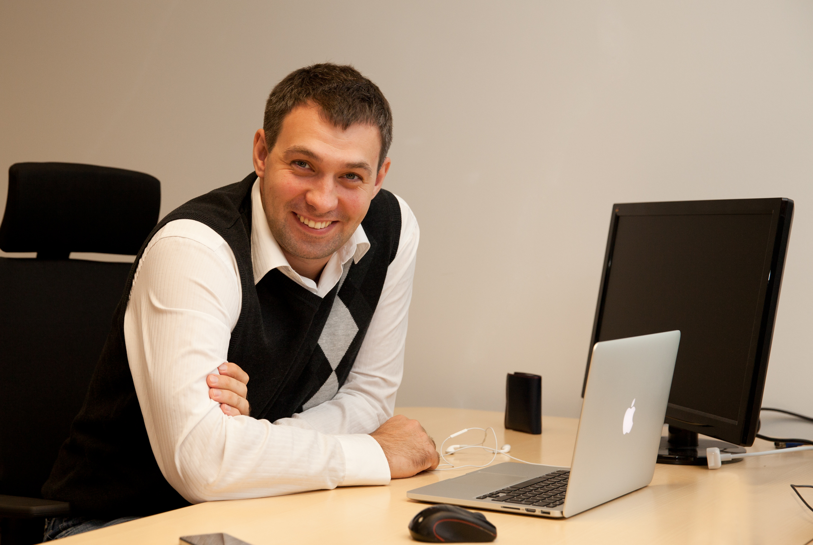

Михаил Шуменков
Обо мне
Я работаю в IT уже больше десяти лет. В основном занимаюсь администрированием систем, но сталкивался и с DevOps. Сейчас работаю с интеграторами, занимаюсь развертыванием решений в облаке Azure.
Родился в ЭССР, в пограничном городе Нарва, сейчас живу в Таллине.
Образование
Закончил Нарвскую гуманитарную гимназию в 2003-м году. В этом же году поступил в Таллиннский Технический Университет (ТТУ) на отделение Машиностроения. Через год понял, что делать чертежи для работяг на заводе это не мое и забрал документы.
В 2006-м закончил Нарвский проф-тех по специальности Компьютер и компьютерные сети. После чего вернулся в Таллин и в 2007 году начал впервые работать по профессии.
В 2008-м снова поступил в ТТУ, но в этот раз на заочное отделение информатики и закончил его в 2012-м году.
Опыт работы
| Годы | Должность |
|---|---|
| 2007-2012 | Координатор ИТ отдела |
| 2012-2014 | Системный Инженер |
| 2014-2015 | Системный Архитектор |
| 2015-2018 | Руководитель команды системных администраторов |
| 2018-сегдня | Преподаватель курса по управлению и администрированию ЦОД |
| 2018-сегдня | Архитектор облачных решений |
Хобби
В свободное время увлекаюсь игрой в Шахматы и чтением ИТ новостей. Особенно интересует область VDI и EUC.
Пару лет назад стал увлекаться стрельбой из пистолета и получив разрешение купил себе 9mm GrandPower P1 Ultra. Походы в тир очень помогают снять напряжение. ^_^
В прошлом году сдал на права на мотоцикл и сейчас готовлюсь к новому сезону.
Как я становился разработчиком
- 13.01.20 Начал курс по Специализации «Frontend-разработчик» на потоке FR-5
- 20.01.20 Начал изучать HTML
- 24.01.20 Начал изучать CSS
- 27.01.20 Начал изучать Flexbox
- 02.02.20 Сделал эту страничку